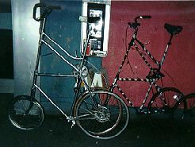
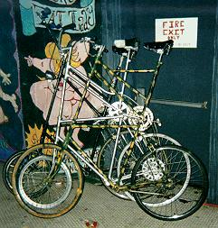
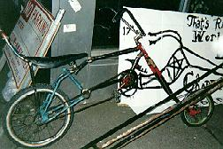
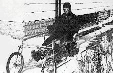
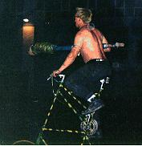

Finally, after two years of riding the streets of Seattle alone, I met the HTBC when they rolled into town with Cirkus Redickuless. I had seen pictures of their rides, and it looked like they possessed some highly advanced technology. I didn't think that they'd be too impressed with the Organ Donor, but I looked forward to riding with someone who was at eye level. When I arrived at the bar where they were supposed to be, however, they hadn't arrived yet. I got tired of riding around and looking for them, so I parked out front and went inside to wait them out. They strolled in a few beers later and demanded to know who's tall bike that was outside, and greeted me very cordially when they found out that it was mine.
|

 |
Needless to say, their bikes are of a very sophisticated design. They don't flip the frame, but instead weld an entire front triangle on top of the base frame. This raises the pedals a little higher than on the Chunk tall bikes. Probably because of this, they don't use the stomp-on-the-pedal-and-hoist method of mounting, instead climbing up the scaffolding like monkeys. Some of their bikes have a little peg for the first step, like those used to get up on highwheelers - indeed, it is placed exactly where the pegs were put on safeties when people hadn't yet discovered that they didn't have to leap onto them from the rear, as for a highwheeler. I still think of the hoist method as being more graceful, and it is also given elegance by the fact that it is the exact same maneuver executed when mounting a short bike on the fly. Their clambering was beautiful to watch, though, as it was both fluid and lightning fast. Skitch in particular was a fucking ballerina. He'd bunny-hop something and then immediately stand on the top of the rear wheel and skid until he had almost stalled, then pop a wheelie and keep it just low enough to stop himself from flipping backwards. |
|
The double-frame design allows the use of a long steer tube with nuts and races for the head tubes of both frames. Very sturdy, and the handlebars don't flex all over the place. This also means that they can use a normal stem, without the sketchy weld needed to keep the wedge-tightening bolt in its normal position with a tall neck. It does, however, cause problems during quick dismounts, as the space between the seat tube and head tube is not only occupied, but occupied by a sort of steel hammock of pipes. While the sloping front seat tube supports of the Donor and Tallboy have caught a few feet attached to people who were trying hard to keep them below their asses, they do at least end low enough that a pilot who has to pitch forward (as in a failed slow stall maneuver) is usually able to slide down and get a foot on the ground before any fleshy crotches meet metal ones. One might have a brown stain in one's drawers, but one's most sensitive parts won't be hammered. Ah well, every technological advance comes with a price, and their bikes are exquisite rides overall.

We disobey the laws of physics. Our bikes are impossible to ride anyway but riding on the Minneapolis ice, we're working miracles. It's a religious activity. We make sacrifices. We sacrifice people, not bikes - the bikes are sacred. Well, we'll light bikes on fire sometimes. A little gore, a little blood, that's just like heroin to the Bike Gods, they want to see a little blood, so we give it to them. -Fat Chick Rick.

This extra handlebar support is necessary, however, for jousting. After juggling a lance for half a block on the Donor, I knew that I wouldn't have a chance. As soon as I took a blow to the chest, I'd have to hold on hard to the handlebars to avoid going over the back. I knew what would happen then - the bars would twist about a foot, then spring back while I was trying to steer with one hand. The Donor's current small front wheel tightens up the head tube angle, and reduces her trail, so she usually needs to be told exactly where to go. She won't just lean in whatever direction is proper to keep one in the saddle, like on a chopper. In fact, simply riding one-handed can be a challenge - one has to oversteer an instant early, then wait for the twist to be transmitted to the front wheel, and then snap the bars back a little to counter the stored momentum that wants to turn the wheel too far. In addition, the long stem is bent a little to the side, so that turning left and turning right require different forces and leans. I knew that the outcome of a few jousting runs would be my body impaled on that stem. I couldn't make this excuse to the HTBC, though - they'd have laughed at me before driving me away. A few of them sneered at my helmet, even after I showed them the crack that was made when it saved my life. Shit, they even took off their shirts before jousting. I wasn't about to become a sacrifice to their Bike Gods, though, and luckily they didn't need me, because there were plenty of suckers milling around after the Cirkus. After holding the bike steady while these braves climbed aboard and giving them a few practice runs up and down the block, the HTBCers would press a lance into their hands and set them at each other. It helped that none of these people yet knew how to dismount, and that lessons weren't given until an opponent had been unseated.

| Copyright 2003 Megulon Five <megulon5@dclxvi.org>. |
|
This work is licensed under a Creative Commons License. | Last modified 10 October 1997. |